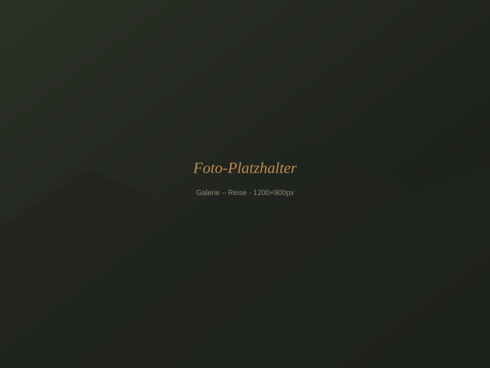
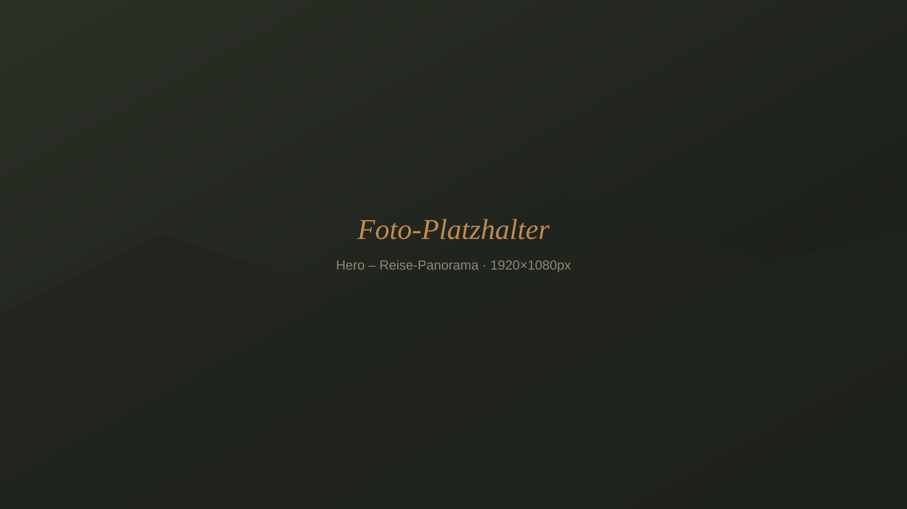
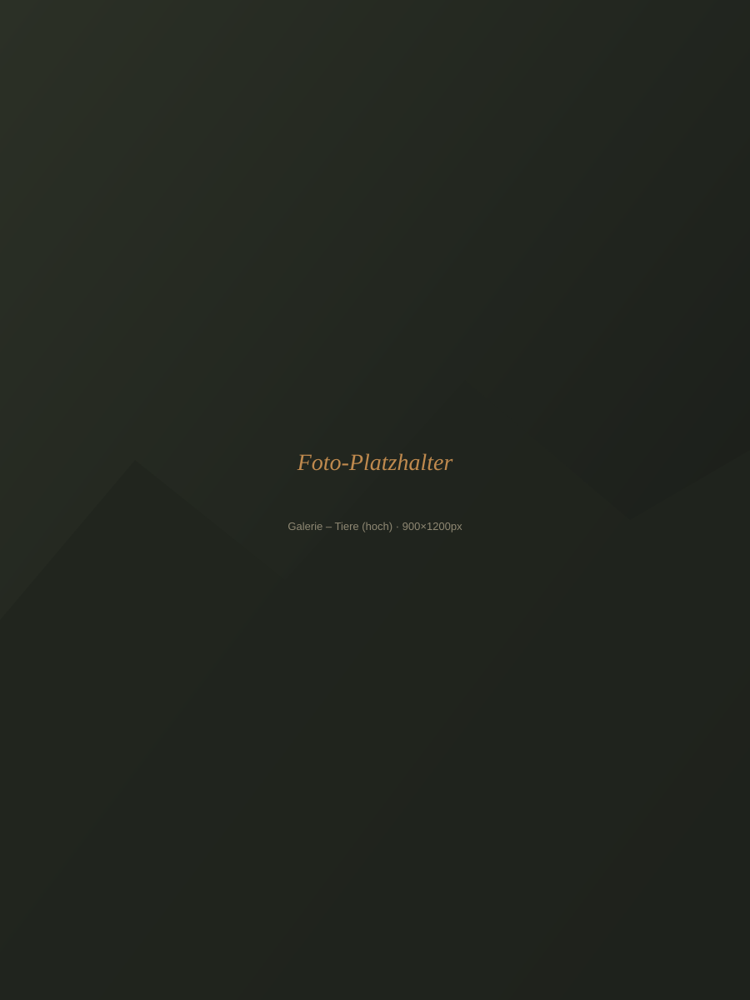

[Titel des Motivs]
[Ort, Jahr]

Handverlesene Kunstdrucke aus eigenen Reisen — Landschaften, Tiere und Städte, festgehalten unterwegs und als limitierte Abzüge auf hochwertigem Papier gedruckt.
Galerie ansehenHier sammle ich Fotografien, die auf dem Weg entstanden sind — vom Gipfelgrat bis zum Straßenrand einer fremden Stadt. Jeder Druck erzählt kurz, wo er aufgenommen wurde und was den Moment besonders gemacht hat.

[Ort, Jahr]

[Ort, Jahr]
[Ort, Jahr]
![[Platzhalter: Porträt oder Signatur-Motiv]](images/ueber-mich-portrait.svg)
Ich bin Niclas — unterwegs mit der Kamera, wenn andere im Urlaub die Füße hochlegen. Reisefährten ist aus der Frage entstanden, was mit den Bildern passieren soll, die mehr als nur ein Erinnerungsfoto sind.
Von Küstenlandschaften bis zu Tierbegegnungen — die Galerie wächst mit jeder neuen Reise. Wie ein Druck seinen Weg zu dir findet, steht in Ruhe zum Nachlesen bereit, sobald ein Motiv gefunden ist.
Zur Galerie